통화 종료 → 표현 하나 → 직접 말해보기 → 저장 확인의 실제 앱 화면 12개를 확인한다. 화면은 Chromium의 원본 뷰포트 PNG이며, 인증·음성·생성 문구는 합성 fixture다. 실제 사용자 계정이나 대화문에 접근하지 않았다.
첫 화면의 주 행동 위치는 아래와 같다. 짧은 예시에서 확인한 결과이며, 긴 문장이나 큰 글자가 언제나 한 화면에 들어온다는 의미는 아니다. 실제 iPhone·스크린리더 청취·사용자 이해도·학습 효과는 별도 검증 대상이다.
마지막 전사와 저장을 확인한다. 긴 대화문은 접힌 상태로 열어 볼 수 있다.
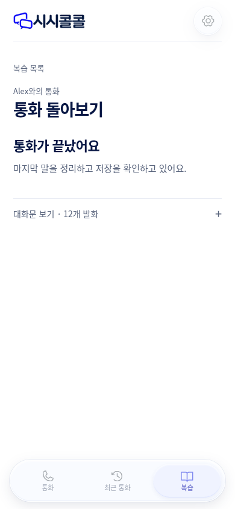
대화 저장과 피드백 준비를 구분하고, 기다리지 않고 다른 화면으로 이동할 수 있다.
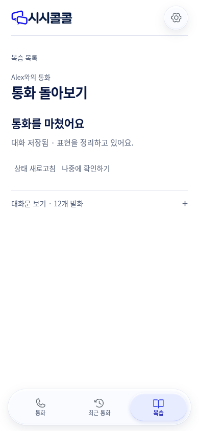
원문·추천문·이유·직접 연습 행동을 먼저 읽는다. 전체 피드백과 대화문은 추가 탐색으로 둔다.
짧은 예시의 주 행동이 첫 화면에서 하단 메뉴 위에 보인다. 긴 내용은 세로 스크롤한다.
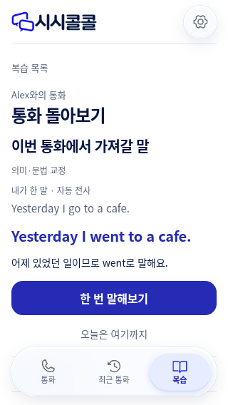
추천문을 가린 채 자신의 말로 연습한다. 녹음·자동 채점으로 오해하지 않게 안내한다.
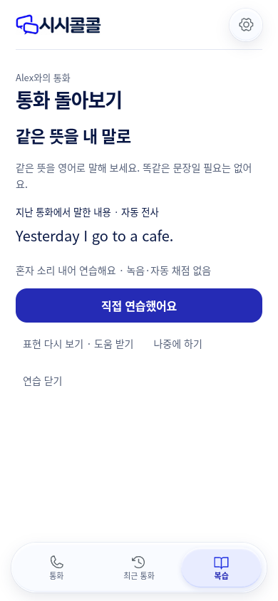
실패한 저장을 같은 요청 ID로 명시적으로 재전송한 뒤의 화면. 저장 확인 후 하나의 마치기 행동을 남긴다.
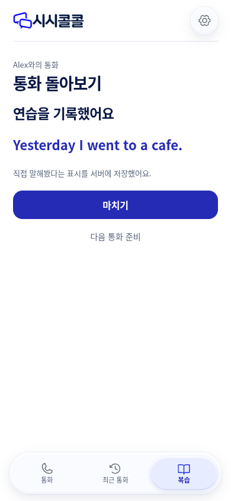
일반 복습 탭은 남겨둔 표현을 먼저 보여 준다. 다른 회차의 피드백과 보관함은 펼쳐 볼 수 있다.
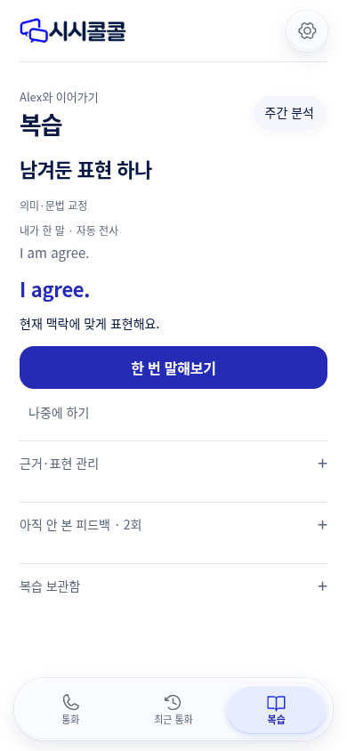
유효한 발화가 없어 표현을 만들지 않았음을 설명한다. 분석 준비 안내와 겹치지 않는다.
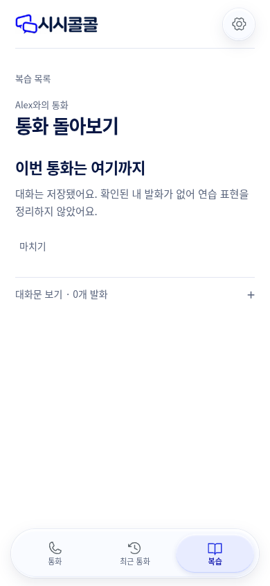
저장된 대화와 피드백 실패를 구분한다. 같은 회차에서 다시 준비할 수 있다.
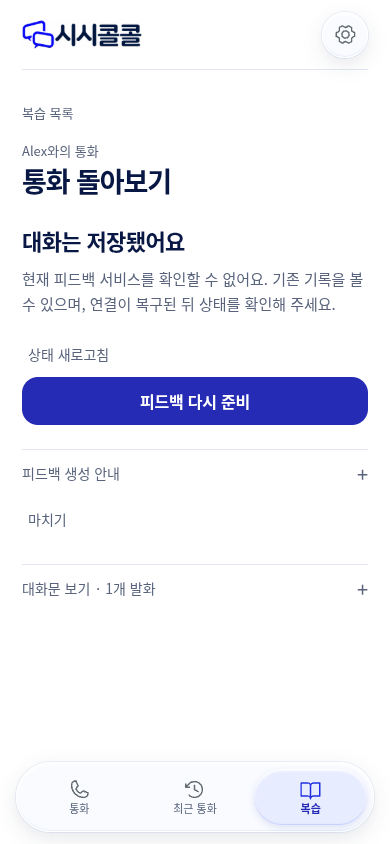
이전 연습을 중단하고 새 통화를 끝내도 새 결과가 보인다. 오래된 연습 화면이 결과를 숨기지 않는다.
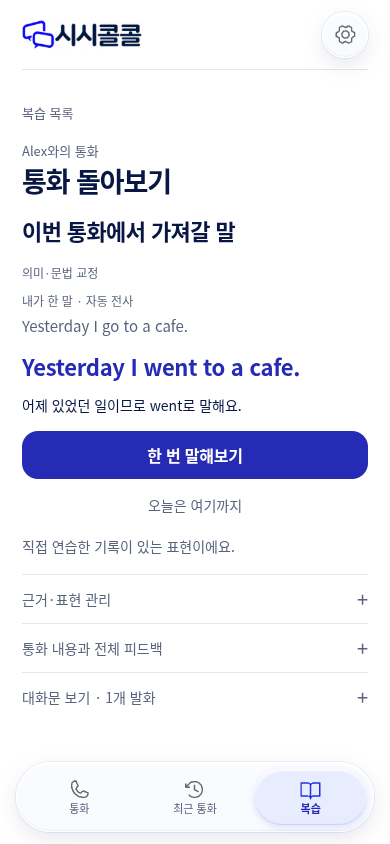
회차 화면을 통하지 않은 연습도 저장 확인 뒤 동일한 완료 행동을 제공한다.
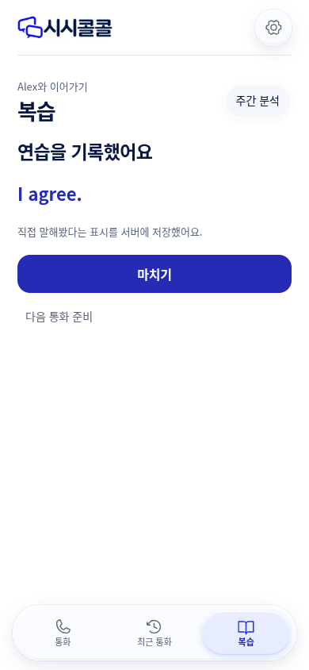
주간 분석을 선택한 뒤 늦게 도착한 기록 조회가 선택한 분석을 다른 회차로 바꾸지 않는다.
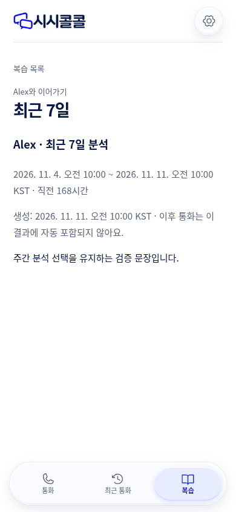